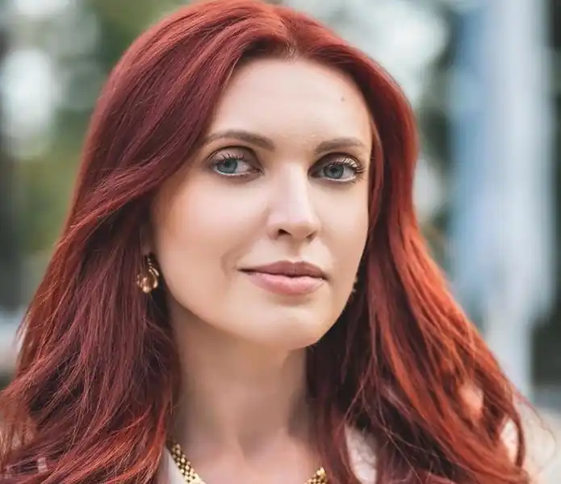

Почала писати у дорослому віці. Під час Революції Гідності з'явився перший вірш. Опублікувала його у Фейсбуці й забула, а ввечері відкрила сторінку і побачила нереальну кількість репостів, коментарів та особистих повідомлень. Людям він відгукнувся. Хоч на той час всі були чутливими до емоційних, патріотичних рядків.
Довгий час писала про події Майдану, потім про війну. Пізніше це вже були не тільки поезії на соціальні теми, а й любовна лірика.
До виходу книги "Ефект близькості" не вважала себе поеткою, але коли взяла книгу в руки – усвідомила, наскільки це відповідально. Реакція читачів на книгу була і залишається хорошою. Мабуть, тому, що до цього якраз і спонукали читачі поетесу, адже спершу аудиторія сформувалася сторінці у соцмережі. Під час пандемії коронавірусу проводила поетичний онлайн-марафон "Слова – щоб дихати". Віршами зібрали кошти на кисневі концентратори для благодійного фонду "СВОЇ". До цього марафону було залучено багато громадських діячів, телеведучих, акторів, музикантів. У ньому взяли участь Тарас Тополя, Сергій Мартинюк, Юрій Андрухович, Сергій Жадан, Даніела Заюшкіна, Соня Сотник, Яніна Соколова, YARMAK і багато інших.